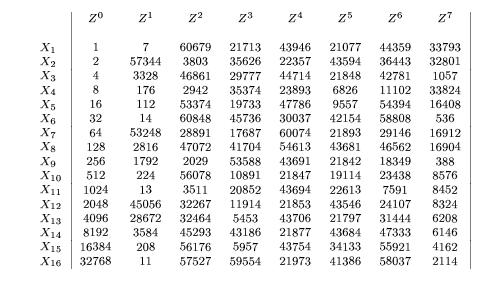

Cipher Key Secret, cryptographic key that is used by the Key Expansion routine to generate a set of Round Keys; can be pictured as a rectangular array of bytes, having four rows and Nk columns.
Plaintext Data input to the Cipher or output from the Inverse Cipher.
Ciphertext Data output from the Cipher or input to the Inverse Cipher.
Rijndael Cryptographic algorithm specified in this Advanced Encryption Standard (AES).
for more details about the AES standard, please refer to AES home page.
Fault detection using Error detecting codes (EDCs)
Associates one parity bit with each byte element of the state matrix S, for a total of 16 parity bits. These parity bits can be arranged as a 4X4 parity matrix, the bit elements of which are in one-to-one correspondence to the byte elements of the state matrix S . Each parity bit is computed so that the parity of the data byte and the associated parity bit will be even. To implement this coding scheme, it is necessary to develop, for each round transformation, a method for predicting the output parity, given the input state and the input parity.
The follwing section provides more information about the calculation of predicted parity.
SubBytes (or Sbox). The Sbox is usually implemented as a 256X8 bits memory, consisting of a data storage section and an address decoding circuit. The incoming data bytes will normally have properly generated even parity bits. To generate the outgoing parity bits, an even parity bit can be stored with each data byte in the Sbox memory, which will now be of size 256X9 bits.
ShiftRows. The prediction of the output parity bits is straightforward: It is simply a rotated version of the input parity bits following the same rule.
MixColumns. The prediction of the output parity bits of MixColumns is the most mathematically complex one. The detailed solution is described in Appendix A of the paper. The final set of equations for predicting the parity bits are, however, quite simple.
AddRoundKey. The prediction of the output parity bits is almost straightforward: It consists of adding the input parity matrix associated with the data block to the parity matrix associated with the current round key.
The complete prediction scheme for one round is obtained by cascading the prediction schemes of the four round transformations. To check the parity bits and generate a parity error flag, we need a set of byte parity generators and comparators which will compare the predicted parity bits to the generated parity bits.
This method can detect all the faults of odd order, and can detect most of the faults of even order.
For more details about this EDC method, please refer to the article:
G. Bertoni, L. Breveglieri, I. Koren, P. Maistri and V.
Piuri,
"Error Analysis and Detection Procedures for a Hardware
Implementation of the Advanced Encryption Standard," (pdf file), IEEE Trans. on
Computers, April 2003.
Fault location
In order to study the propogation of incorrect parity state, an error state matrix E is defined. It is of the same size as the the parity error and contains a 1 in each position where the expected parity and the actual parity dont match. When a fault is inject in a round, the error state matrix will show a single entry of value 1. As the fault propogates through the system, the error state matrix changes at the end of each round. After eight rounds, the error state matrices start repeating again in a cycle. The figure below shows the error state matrices (in decimal form) for each round when a fault is injected in a particular byte.

X1 - X16 are the different bytes in which the faults can be injected. Z0 - Z7 are the error state matrices for rounds 0 (current round) to the 7th round following the fault inject round. It is obvious from the figure that all the error state matrices are unique, giving us the ability to detect the round and the byte in which the fault was detected with a latency of atmost eight rounds.
For more details about this method, please refer to the article:
G. Bertoni, L. Breveglieri, I. Koren, P. Maistri and V.
Piuri,
"Detecting and Locating Faults in VLSI Implementations of the Advanced Encryption Standard," (pdf file), Proc. of the 2003 IEEE International Symposium on Defect and Fault Tolerance in VLSI Systems, April 2003.
Key size in bits:
Select the desired secret key size. It can be one of 128, 195 or 256 bits.
Block size in bits:
Select the desired block size. It can be one of 128, 195 or 256 bits.
Key in hex:
Enter the secret key in hex. For 128 bits, enter 32 hex characters, for 194 bits, enter 48 hex characters and for 256 bits, enter 64 hex characters.
Plain or Cypher text in Hex:
Enter the Plain text or encrypted text in hex. For 128 bits, enter 32 hex characters, for 194 bits, enter 48 hex characters and for 256 bits, enter 64 hex characters.
Experiment:
Choose the experiment you want to run. Choose 'None' if you want to run the AES algorithm without injecting faults. Choose 'Fault detection' if you want to use the scheme described by the first paper above. Choose 'Fault Location' if you want to use the scheme described by the second paper above.
Round Number:
Applicable only if 'Fault Detection' or 'Fault Location' is choosen above. Enter the round number in which the fault should be injected.
Round Transformation:
Applicable only if 'Fault Detection' is choosen above. For fault location, the fault is injected before the start of the round. Choose the appropriate transformation that you want to inject the fault into.
Byte number:
Applicable only if 'Fault Detection' or 'Fault Location' is choosen above. Enter the byte number that should be injected with a fault. A random bit will be flipped in that byte.
Round to check fault detection in:
Applicable only if 'Fault Detection' or 'Fault Location' is choosen above. Enter the round in which the fault should be detected.
Action buttons:
Click 'Encrypt' or 'Decrypt' to run the simulation. 'Click' clear to clear all the fields.
Expected Output (plaintext or encrypted text):
The expected plaintext or encrypted text will be shown in hex.
Actual Output (plaintext or encrypted text):
The actual plaintext or encrypted text will be shown in hex. It will match the previous field if the experiment is 'None'.
Fault detection/Location results:
The results of the fault detection or location experiments will be shown here. Note that for fault location, the results shown can be wrong if the round in which the fault is checked is separated from the injection round by 8 rounds or greater. Refer to the second paper above for more details.
Expected Parity:
The expected parity of the state matrix at the fault detection round.
Actual Parity:
The actual parity of the state matrix at the fault detection round.
Error State Matrix:
The error state matrix is only shown for the 'Fault Location' experiment. In the ideal case, it will be all zeros. Refer to the second paper above for more details.